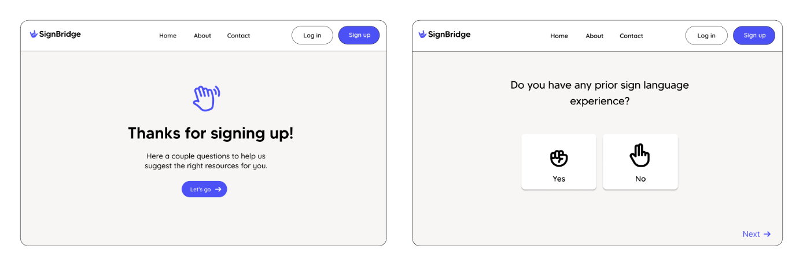
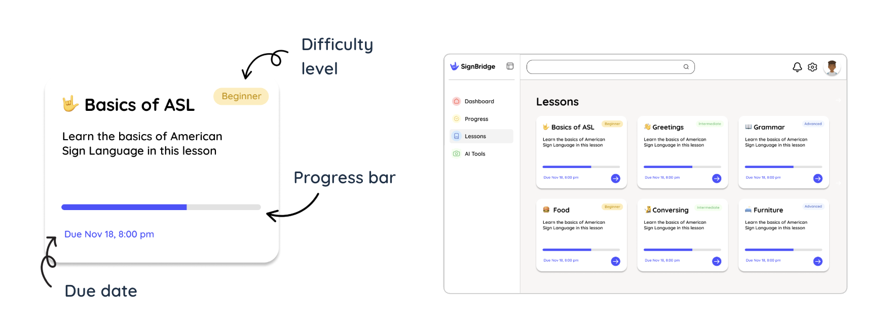

Motivation
Despite over 500,000 people in the U.S. using ASL to communicate, most popular language-learning platforms
do not support ASL practice. Our goal with SignBridge was to create an interactive, personalized learning
platform that leverages AI/ML to help learners practice ASL accurately and receive real-time feedback.
Key Features
Personalized Quiz

After signing up, users take a personalized quiz. This lets us understand their goals and prior ASL knowledge
so we can suggest the
right resources and lessons.
Dashboard
A central hub where users can check their ASL learning progress, jump into lessons, and view their progress
in relation to others.
Progress Page
Users can see their progress more in-depth on the progress page. To gamify the ASL learning experience, we
offer checkpoints after users complete a certain amount of lessons.
Lessons

Users can view their upcoming lessons and get started.
AI Tools
Users can use use SignBridge’s AI/ML video-to-text, ASL-to-voice, or word-to-ASL features to practice ASL and
get feedback in real time.
Video Demo
Short demo recording of key features